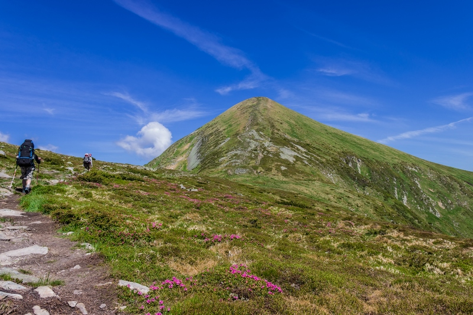
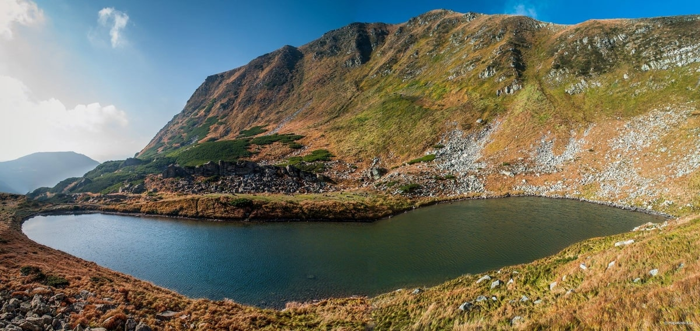
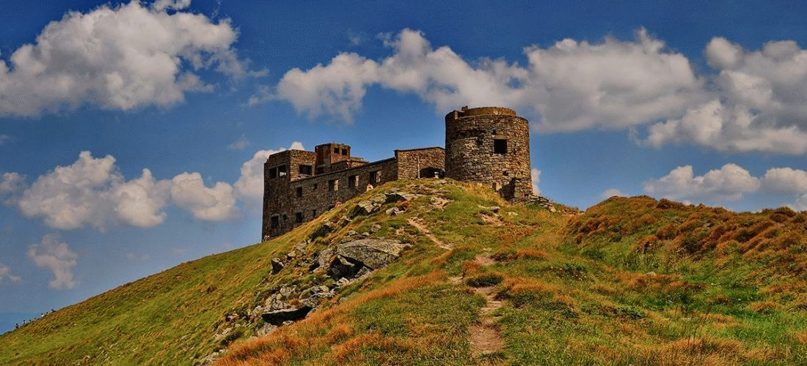
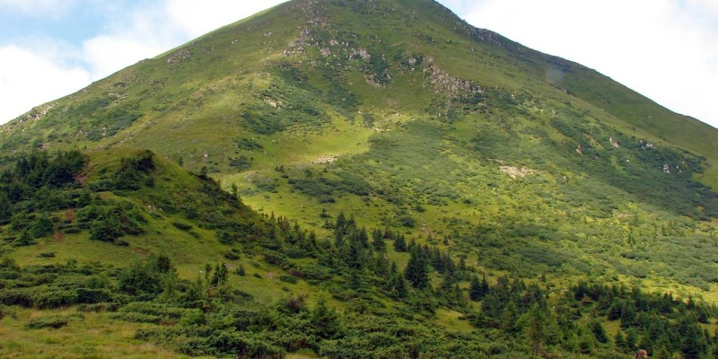
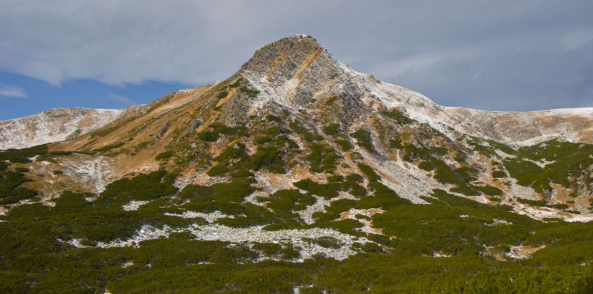

Возможно, любовь к горам – это что-то врожденное. А быть может она приходит со временем. Сложно сказать однозначно, тем более что роскошная природа Украины этой любви только способствует! Лучшие горные вершины находятся в Карпатах, в окружении сказочных рек, лесов и водопадов. И доступны они всем желающим, ведь на арендованном автомобиле можно доехать прямо к подножиям. А в автопарке «Укр-Прокат» во Львове вы точно найдете машину, подходящую для такого путешествия!
1. Говерла. Высота – 2061 м
Говерла – самая высокая точка в украинской части Карпат. Находится она на стыке Закарпатской и Ивано-Франковской областей, и это безоговорочно самый популярный маршрут! Тем более, вокруг полно мест, где можно остановиться – Яремче, Верховина, Ворохта.
У подножия Говерлы находится главный исток реки Прут, а неподалеку – каскад водопадов высотой около 80 м. Тут несколько туристических дорожек, и первая появилась еще в 1880 году.
2. Бребенескул. Высота – 2035 м
Вершина Бребенескул находится между двух других живописных гор – Менчул и Ребра. Она не так явно выделяется на фоне окружающего пейзажа, но зато тут есть удобные трекинговые маршруты, а по пути можно увидеть еще много карпатских достопримечательностей. Например, одноименное высокогорное озеро, Дзембронские водопады или Вухатый камень.
В отличие от пирамидального Пип Ивана, гора Бребенескул скорее куполообразная. На рельефе сказались ледниковые процессы и морозное выветривание. Посреди альпийских лугов очень много эффектных каменных россыпей.
3. Поп Иван. Высота – 2028 м
Это еще одна вершина Черногорского массива, которая находится неподалеку от горы Бребенескул. Отсюда открывается самая красивая панорама на весь хребет и окрестности. Сверху находится необычная обсерватория, которая привлекает туристов – «Белый слон». По пути можно отдохнуть в селе Шибене и посетить озеро Маричейка. Виды вокруг очень эффектны, ведь гора не зря относится к Карпатскому государственному национальному парку. Старое название – Черная гора, и по преданию именно тут Олекса Довбуш победил черта.
На самом деле существует еще одна вершина Поп Иван. Она немного ниже – 1936 м, и относится к Мармарошскому массиву около Гуцульских Альп, на границе Украины и Румынии. У пика причудливая пирамидальная форма с эффектными крутыми склонами на востоке и севере. В сезон паводков вокруг стихийно формируются небольшие озерца.
4. Петрос. Высота – 2020 м
Петрос находится прямо за Говерлой и поражает эффектной красотой. Особенно сказочно вершина выглядит в непогоду, окутанная тучами и молниями, за что ее и прозвали грозовой. В то же время она считается самой опасной на всем Черногорском хребте. Глубокое урочище между Петросом и Говерлой как будто бы отделяет гору от остального массива. Поблизости можно отдохнуть в Лазещинах или Квасах.
5. Гутин Томнатик. Высота – 2016 м
Вершина Гутин Томнатик находится в Раховском районе Закарпатской области, неподалеку от озера Бребенескул. Причем, как ни странно, она ближе к нему, чем одноименная гора. Так что отличный повод совместить! Это самое высокогорное озеро Украины на высоте 1801 м. Своим необычным ландшафтом и флорой пик обязан своему происхождению, ведь в свое время на него очень повлиял ледник. Сейчас тут много удивительных альпийских и субальпийских растений, включая редкие, вымирающие и реликтовые виды. Отдохнуть поблизости можно в селе Говерла или Быстрец.